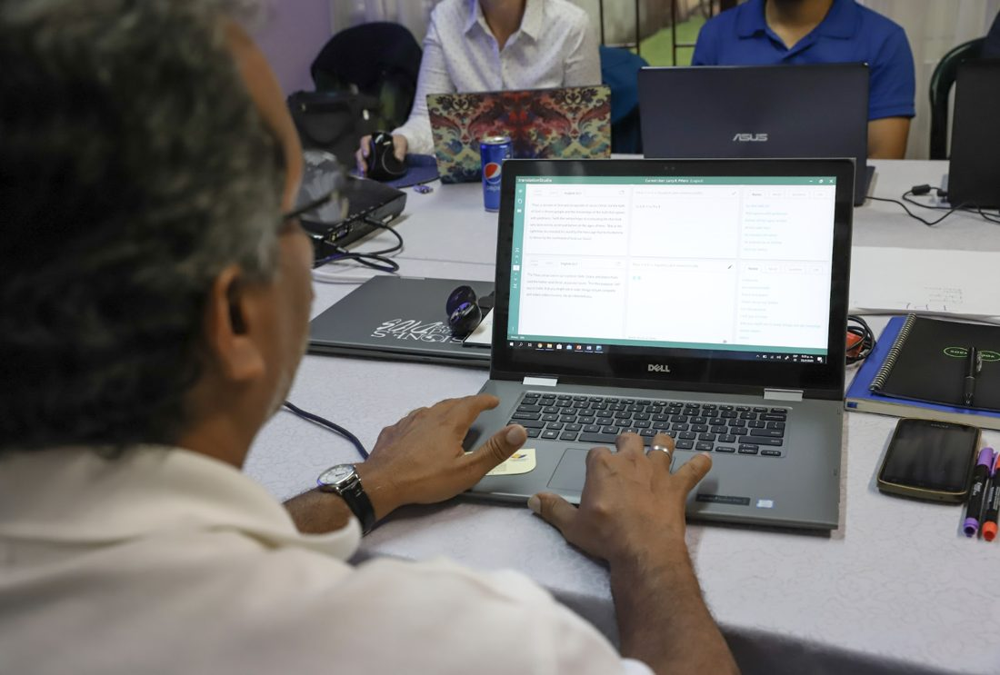
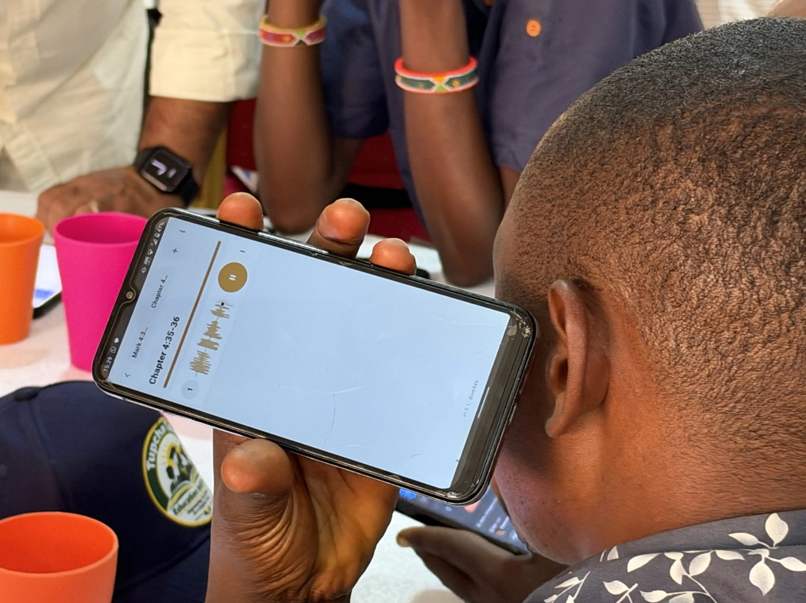

Understand
Explore what Scripture means.
Translate
Express it naturally, in writing or speech.
Check
Review for accuracy and clarity.
translationCore Desktop
From understanding to sharing Scripture
One workspace that brings unfoldingWord’s translation resources together, so translators can understand Scripture and translate it accurately and clearly. Works offline.
- Understand the passage
- Draft and revise together
- Check and align
- Export and share
New: we recently rolled out translationCore v4 Beta. Previous version
Drafting a section with notes alongside.

Recording one segment of a chapter.
translationCore Mobile
Speak. Record. Listen. Translate.
Record on a phone, listen back, and improve. Works offline.
Churches and teams, in their own languages
translationCore Desktop
A translation your community can trust
Draft, check, and align in one workspace, even offline.
“translationCore is the fastest software we have ever seen.”

translationCore Mobile
Oral translation, with just a phone
Leaders at a Nairobi workshop recorded Bible stories in their own languages, using only phones.
“With this app, we can take the training and the technology to the people we are trying to reach.”

Open tools for Church Centric translation work
Open-licensed, free, and built to work offline.
Get started
Desktop
Windows, Mac, and Linux. New: translationCore v4 Beta.
Need help? Getting Started · Release Notes
Frequently asked questions
Is translationCore free?
Yes. translationCore Desktop and Mobile are free and open source, and the Biblical Resources are open-licensed and free to use, share, and adapt.
Does translationCore work offline?
Yes. Both translationCore Desktop and translationCore Mobile work offline.
Which devices does translationCore run on?
translationCore Desktop runs on Windows, Mac, and Linux. translationCore Mobile runs on Android, iPhone, and the web.
Who makes translationCore?
translationCore is an initiative of unfoldingWord.